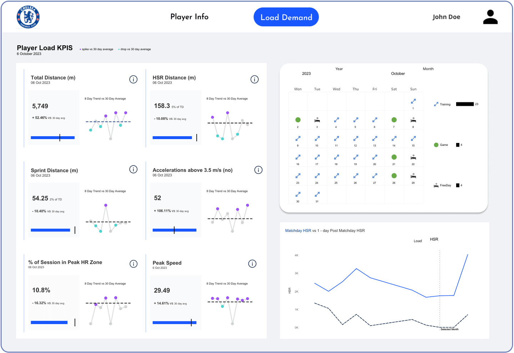

It started as a competition entry
Chelsea FC released a set of GPS tracking data and asked people to analyse it. I built the dashboard in Tableau: player load, acute versus chronic training demand, a match-day calendar and a full player profile. It was shortlisted. It didn't win, but it taught me exactly what a load dashboard has to say, and to whom.

The message that made it a product
A physical trainer at a top-flight European club had seen it and asked for the same thing built on his squad's data. When it was done he asked whether it could build itself: a coach uploads their export, whatever its shape, and the analysis comes back on its own.
I'd built it twice by hand, so I knew every step between a raw export and a finished read. The open question was whether AI could handle the messy middle, reading a file it had never seen and working out what each column meant. It could.
Then the real files arrived
Around forty coaches and sport scientists signed up. Everyone's spreadsheet was different. Some packed a week into one sheet as stacked tables. Others uploaded a session with no dates, because to them the date was obvious. Uploads bounced, and the ones that worked took two to three minutes to show anything. People uploaded once, watched a spinner and left.
The fix
I rebuilt the intake on one assumption: no two files agree. AI now reads the raw export and works out its structure: where the data starts, which column is the date, and whether the sheet is one day or a season in blocks. If a day has no date, it asks. If a date is ambiguous, it settles US versus European format instead of guessing. Then I removed the wait. The dashboard returns your first seven days in a couple of seconds and streams the rest in behind you.
Time to first chart, seconds